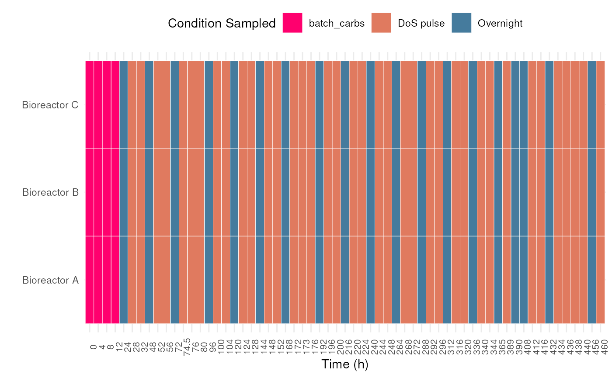
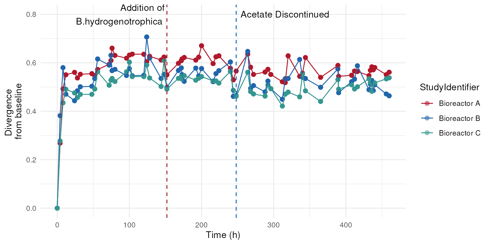
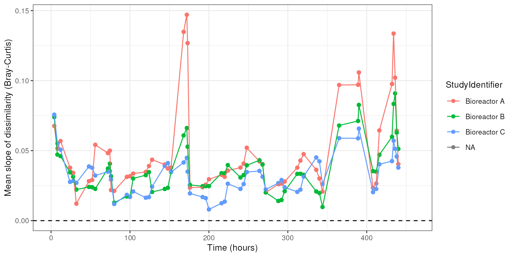
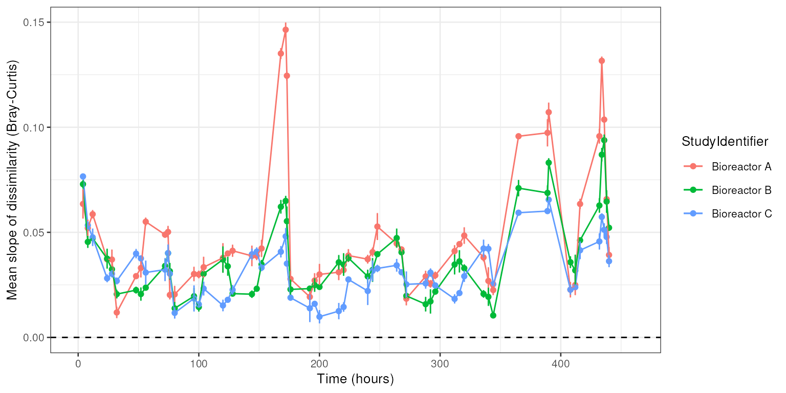

vignettes/articles/minimalgut.Rmd
minimalgut.RmdDense samples of the minimal gut microbiome. In the initial hours,
MDb-MM was grown under batch condition and 24 h onwards, continuous
feeding of media with pulse feeding cycles. This information is stored
in the colData.
library(miaTime)
data(minimalgut)
tse <- minimalgut
# quick check of number of samples
kable(table(colData(tse)$StudyIdentifier,colData(tse)$condition_1))| batch_carbs | DoS pulse | Overnight | |
|---|---|---|---|
| Bioreactor A | 4 | 38 | 19 |
| Bioreactor B | 4 | 38 | 19 |
| Bioreactor C | 4 | 38 | 19 |
Visualize samples available for each of the bioreactors. This allows to identify if there are any missing samples for specific times.
## Loading required package: ttservice##
## Attaching package: 'ttservice'## The following objects are masked from 'package:dplyr':
##
## bind_cols, bind_rows
tse |>
ggplot(aes(as.factor(Time.hr), StudyIdentifier)) +
geom_tile(aes(fill=condition_1), color="white") +
scale_fill_manual("Condition Sampled",
values = c("#ff006e", "#e07a5f", "#457b9d")) +
theme_minimal() +
theme(axis.text.x = element_text(size=8, angle = 90),
legend.position = "top") +
labs(x="Time (h)", y="")
The minimalgut dataset, mucus-diet based minimal
microbiome (MDbMM-16), consists of 16 species assembled in three
bioreactors. We can investigate the succession of mdbMM16 from the start
of experiment here hour zero until the end of the experiment.
## Divergence from baseline i.e from hour zero.
tse <- mia::relAbundanceCounts(minimalgut) # get relative abundance## Warning in mia::relAbundanceCounts(minimalgut): 'mia::relAbundanceCounts' is deprecated.
## Use ''relAbundanceCounts' is deprecated. ' instead.
## See help("Deprecated") and help("Use 'transformAssay' instead.-deprecated").
tse <- getBaselineDivergence(tse,
group = "StudyIdentifier",
time_field = "Time.hr",
name_divergence = "divergence_from_baseline",
name_timedifference = "time_from_baseline",
assay.type="relabundance",
FUN = vegan::vegdist,
method="bray")Visualize the divergence
# First define nice colors for bioreactors
bioreac_cols <- c(`Bioreactor A`= "#b2182b",
`Bioreactor B`= "#2166ac",
`Bioreactor C` = "#35978f")
tse |>
ggplot(aes(x=Time.hr, y=divergence_from_baseline))+
geom_point(aes(color=StudyIdentifier), size=2, alpha=0.5) +
geom_line(aes(color=StudyIdentifier)) +
theme_minimal() +
scale_color_manual(values = bioreac_cols) +
labs(x="Time (h)", y="Divergence \nfrom baseline") +
# highlight specific timepoints
geom_vline(xintercept = 152, lty=2, color="#991720") +
geom_vline(xintercept = 248, lty=2, color= "#0963bd")+
annotate("text",x=c(152, 248),y=c(0.8, 0.8),
label=c("Addition of\nB.hydrogenotrophica","Acetate Discontinued"),
hjust=c(1.05,-0.05))
Now visualize abundance of Blautia hydrogenotrophica using
the miaViz::plotSeries function.
library(miaViz)## Loading required package: ggraph
plotSeries(mia::relAbundanceCounts(minimalgut),
x = "Time.hr",
y = "Blautia_hydrogenotrophica",
colour_by = "Species",
assay.type = "relabundance")+
geom_vline(xintercept = 152, lty=2, color="#991720") +
geom_vline(xintercept = 248, lty=2, color= "#0963bd")+
annotate("text",x=c(152, 248),y=c(0.2, 0.15),
label=c("Addition of\nB.hydrogenotrophica","Acetate Discontinued"),
hjust=c(1.05,-0.05))+
labs(x="Time (h)", y="B.hydrogenotrophica\nRelative Abundance") +
theme(legend.position = "none") ## Warning in mia::relAbundanceCounts(minimalgut): 'mia::relAbundanceCounts' is deprecated.
## Use ''relAbundanceCounts' is deprecated. ' instead.
## See help("Deprecated") and help("Use 'transformAssay' instead.-deprecated").Sample dissimilarity between consecutive time steps(step size n >=
1) within a group(subject, age, reaction chamber, etc.) can be
calculated by getStepwiseDivergence. If we normalize this
by the time interval, this gives an approximate slope for the
change.
# Load libraries
library(miaTime)
library(dplyr)
# Sort samples by time (necessary for getStepwiseDivergence)
tse <- tse[, order(colData(tse)$Time_hr_num)]
# Divergence between consecutive time points
tse <- getStepwiseDivergence(tse, group = "StudyIdentifier",
time_interval = 1,
time_field = "Time_hr_num",
name_divergence = "divergence_from_previous_step",
name_timedifference = "time_from_previous_step",
assay.type ="relabundance",
FUN = vegan::vegdist,
method="bray")## Merging with full join...## 1/32/33/3
# We have now new fields added in the colData:
# time_from_previous_step, divergence_from_previous_step
# print(colData(tse))
# Visualize the slope of dissimilarity between consecutive time points as a function of time (from baseline)
library(ggplot2)
theme_set(theme_bw(10))
p <- tse |> ggplot(aes(x=time_from_baseline,
y=divergence_from_previous_step/time_from_previous_step,
color=StudyIdentifier)) +
geom_point() +
geom_line() +
labs(x="Time (hours)", y="Slope of dissimilarity (Bray-Curtis)") +
geom_hline(aes(yintercept=0), linetype=2)
print(p)This shows how to calculate and plot moving average for the variable of interest (here: slope).
# Add slope explicitly in colData
colData(tse)$slope <- colData(tse)$divergence_from_previous_step / colData(tse)$time_from_previous_step
# Split by group and perform operation
tselist <- mia::splitOn(tse, "StudyIdentifier")
# colData(tse)$divergence_from_previous_step
addmean <- function (x, k, field, field_name) {
# Calculate rolling mean
m <- zoo::rollmean(x[[field]], k = k)
# Initialize empty field
colData(x)[[field_name]] <- rep(NA, ncol(x))
# Fill in the rolling mean (length does not match with original data in rolling mean)
colData(x)[1:length(m), field_name] <- m
# Return the object with a new field added
x
}
# Calculate sliding average for the field "divergence_from_previous_step"
# and store the result in a new field with the name "sliding_average"
tselist2 <- lapply(tselist, function (x) {addmean(x, k=3, field = "slope", field_name = "sliding_average")})
# Merge back
tse <- mia::mergeSEs(tselist2)## Merging with full join...## 1/32/33/3
# Visualize
theme_set(theme_bw(10))
p <- tse |> ggplot(aes(x = time_from_baseline,
y = sliding_average,
color=StudyIdentifier)) +
geom_point() +
geom_line() +
labs(x="Time (hours)", y="Mean slope of dissimilarity (Bray-Curtis)") +
geom_hline(aes(yintercept=0), linetype=2)
print(p)
This shows how to visualize error bars on top of time series. In this example we create artificial replicates and variation for a brief example.
## Source: https://www.geeksforgeeks.org/adding-error-bars-to-a-line-graph-with-ggplot2-in-r/
## Gives count, mean, standard deviation, standard error of the mean,
## and confidence interval (default 95%).
## data: a data frame.
## measurevar: the name of a column that contains the variable to be summariezed
## groupvars: a vector containing names of columns that contain grouping variables
## na.rm: a boolean that indicates whether to ignore NA's
## conf.interval: the percent range of the confidence interval (default is 95%)
summarySE <- function(data=NULL, measurevar, groupvars=NULL, na.rm=FALSE,
conf.interval=.95, .drop=TRUE) {
library(plyr)
# New version of length which can handle NA's: if na.rm==T, don't count them
length2 <- function (x, na.rm=FALSE) {
if (na.rm) sum(!is.na(x))
else length(x)
}
# This does the summary. For each group's data frame, return a vector with
# N, mean, and sd
datac <- ddply(data, groupvars, .drop=.drop,
.fun = function(xx, col) {
c(N = length2(xx[[col]], na.rm=na.rm),
mean = mean (xx[[col]], na.rm=na.rm),
sd = sd (xx[[col]], na.rm=na.rm)
)
},
measurevar
)
# Rename the "mean" column
datac <- rename(datac, c("mean" = measurevar))
datac$se <- datac$sd / sqrt(datac$N) # Calculate standard error of the mean
# Confidence interval multiplier for standard error
# Calculate t-statistic for confidence interval:
# e.g., if conf.interval is .95, use .975 (above/below), and use df=N-1
ciMult <- qt(conf.interval/2 + .5, datac$N-1)
datac$ci <- datac$se * ciMult
return(datac)
}
# Create artificial example on replicates because we don't have any in this demo data
set.seed(3422)
df <- as.data.frame(colData(tse))
sdlevel <- 0.1*mean(df$sliding_average, na.rm=TRUE)
df1 <- df
df2 <- df; df2$sliding_average <- rnorm(mean=df1$sliding_average, sd = sdlevel, n=nrow(df1))
df3 <- df; df3$sliding_average <- rnorm(mean=df1$sliding_average, sd = sdlevel, n=nrow(df1))
df <- bind_rows(list(df1, df2, df3))
# Calculate deviations
df <- summarySE(df, measurevar="sliding_average", groupvars=c("StudyIdentifier", "time_from_baseline"))
# Visualize
theme_set(theme_bw(10))
p <- ggplot(df,
aes(x = time_from_baseline, y = sliding_average, color=StudyIdentifier)) +
geom_point() +
geom_line() +
geom_errorbar(aes(ymin=sliding_average-sd, ymax=sliding_average+sd), width=.2,
position=position_dodge(0.05)) +
labs(x="Time (hours)", y="Mean slope of dissimilarity (Bray-Curtis)") +
geom_hline(aes(yintercept=0), linetype=2)
print(p)
## R version 4.4.1 (2024-06-14)
## Platform: x86_64-pc-linux-gnu
## Running under: Ubuntu 22.04.4 LTS
##
## Matrix products: default
## BLAS: /usr/lib/x86_64-linux-gnu/openblas-pthread/libblas.so.3
## LAPACK: /usr/lib/x86_64-linux-gnu/openblas-pthread/libopenblasp-r0.3.20.so; LAPACK version 3.10.0
##
## locale:
## [1] LC_CTYPE=en_US.UTF-8 LC_NUMERIC=C
## [3] LC_TIME=en_US.UTF-8 LC_COLLATE=en_US.UTF-8
## [5] LC_MONETARY=en_US.UTF-8 LC_MESSAGES=en_US.UTF-8
## [7] LC_PAPER=en_US.UTF-8 LC_NAME=C
## [9] LC_ADDRESS=C LC_TELEPHONE=C
## [11] LC_MEASUREMENT=en_US.UTF-8 LC_IDENTIFICATION=C
##
## time zone: UTC
## tzcode source: system (glibc)
##
## attached base packages:
## [1] stats4 stats graphics grDevices utils datasets methods
## [8] base
##
## other attached packages:
## [1] plyr_1.8.9 miaViz_1.13.2
## [3] ggraph_2.2.1 tidyr_1.3.1
## [5] tidySummarizedExperiment_1.15.0 ttservice_0.4.1
## [7] ggplot2_3.5.1 knitr_1.47
## [9] lubridate_1.9.3 dplyr_1.1.4
## [11] miaTime_0.1.21 mia_1.13.23
## [13] MultiAssayExperiment_1.31.3 TreeSummarizedExperiment_2.13.0
## [15] Biostrings_2.73.1 XVector_0.45.0
## [17] SingleCellExperiment_1.27.2 SummarizedExperiment_1.35.1
## [19] Biobase_2.65.0 GenomicRanges_1.57.1
## [21] GenomeInfoDb_1.41.1 IRanges_2.39.0
## [23] S4Vectors_0.43.0 BiocGenerics_0.51.0
## [25] MatrixGenerics_1.17.0 matrixStats_1.3.0
## [27] BiocStyle_2.33.1
##
## loaded via a namespace (and not attached):
## [1] splines_4.4.1 ggplotify_0.1.2
## [3] tibble_3.2.1 polyclip_1.10-6
## [5] rpart_4.1.23 DirichletMultinomial_1.47.0
## [7] lifecycle_1.0.4 lattice_0.22-6
## [9] MASS_7.3-61 backports_1.5.0
## [11] magrittr_2.0.3 Hmisc_5.1-3
## [13] plotly_4.10.4 sass_0.4.9
## [15] rmarkdown_2.27 jquerylib_0.1.4
## [17] yaml_2.3.8 DBI_1.2.3
## [19] minqa_1.2.7 abind_1.4-5
## [21] zlibbioc_1.51.1 purrr_1.0.2
## [23] yulab.utils_0.1.4 nnet_7.3-19
## [25] tweenr_2.0.3 sandwich_3.1-0
## [27] GenomeInfoDbData_1.2.12 ggrepel_0.9.5
## [29] irlba_2.3.5.1 tidytree_0.4.6
## [31] vegan_2.6-6.1 rbiom_1.0.3
## [33] pkgdown_2.0.9 permute_0.9-7
## [35] DelayedMatrixStats_1.27.1 codetools_0.2-20
## [37] DelayedArray_0.31.3 scuttle_1.15.0
## [39] ggforce_0.4.2 tidyselect_1.2.1
## [41] aplot_0.2.3 UCSC.utils_1.1.0
## [43] farver_2.1.2 lme4_1.1-35.4
## [45] ScaledMatrix_1.13.0 viridis_0.6.5
## [47] base64enc_0.1-3 jsonlite_1.8.8
## [49] BiocNeighbors_1.23.0 decontam_1.25.0
## [51] ellipsis_0.3.2 tidygraph_1.3.1
## [53] Formula_1.2-5 scater_1.33.2
## [55] systemfonts_1.1.0 ggnewscale_0.4.10
## [57] tools_4.4.1 treeio_1.29.0
## [59] ragg_1.3.2 Rcpp_1.0.12
## [61] glue_1.7.0 gridExtra_2.3
## [63] SparseArray_1.5.10 xfun_0.45
## [65] mgcv_1.9-1 withr_3.0.0
## [67] BiocManager_1.30.23 fastmap_1.2.0
## [69] boot_1.3-30 bluster_1.15.0
## [71] fansi_1.0.6 digest_0.6.36
## [73] rsvd_1.0.5 gridGraphics_0.5-1
## [75] timechange_0.3.0 R6_2.5.1
## [77] textshaping_0.4.0 colorspace_2.1-0
## [79] lpSolve_5.6.20 utf8_1.2.4
## [81] generics_0.1.3 data.table_1.15.4
## [83] DECIPHER_3.1.4 graphlayouts_1.1.1
## [85] httr_1.4.7 htmlwidgets_1.6.4
## [87] S4Arrays_1.5.1 pkgconfig_2.0.3
## [89] gtable_0.3.5 htmltools_0.5.8.1
## [91] bookdown_0.39 scales_1.3.0
## [93] ggfun_0.1.5 rstudioapi_0.16.0
## [95] reshape2_1.4.4 checkmate_2.3.1
## [97] nlme_3.1-165 nloptr_2.1.1
## [99] cachem_1.1.0 zoo_1.8-12
## [101] stringr_1.5.1 parallel_4.4.1
## [103] vipor_0.4.7 foreign_0.8-87
## [105] desc_1.4.3 pillar_1.9.0
## [107] grid_4.4.1 vctrs_0.6.5
## [109] slam_0.1-50 BiocSingular_1.21.1
## [111] beachmat_2.21.3 cluster_2.1.6
## [113] beeswarm_0.4.0 htmlTable_2.4.2
## [115] evaluate_0.24.0 mvtnorm_1.2-5
## [117] cli_3.6.3 compiler_4.4.1
## [119] rlang_1.1.4 crayon_1.5.3
## [121] labeling_0.4.3 mediation_4.5.0
## [123] fs_1.6.4 ggbeeswarm_0.7.2
## [125] stringi_1.8.4 viridisLite_0.4.2
## [127] BiocParallel_1.39.0 munsell_0.5.1
## [129] lazyeval_0.2.2 Matrix_1.7-0
## [131] patchwork_1.2.0 sparseMatrixStats_1.17.2
## [133] highr_0.11 igraph_2.0.3
## [135] memoise_2.0.1 RcppParallel_5.1.7
## [137] bslib_0.7.0 ggtree_3.13.0
## [139] ape_5.8